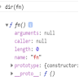
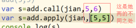
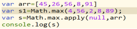

1.动画
(1) Css样式提供了运动
过渡的属性transition 从一种情况到另一种情况叫过渡
Transition:attr time linear delay；
Attr 是变化的属性
Time 是花费的时间
Linear 变化的速度
Delay 是延迟
复习background:url() no-repeat 50% 50% red;
Background-image
Background-repeat
Background-position
Background-color
(2)Js提供的运动
元素的client offset scroll三个系列
clientWidth/clientHeight/clientTop/clientLeft
offsetWidth/offsetHeight/offsetLeft/offsetTop/offsetParent
scrollWidth/scrollHeight/scrollTop/scrollLeft
这十三个属性，前面都是一个只读属性，scrollTop和scrollLeft是即可读也可写
获取浏览器的body属性是有兼容的
Var dd=document.body||document.documentElement
scrollTop和scrollLeft的最小值是0
获取body的整个文档的高
document.body.scrollHeight||document.documentElement.scrollHeight
获取浏览器一屏幕的高(浏览器的可视区)
Document.body.clientHeight||document.documentElement.clientHeight
Window下的两个事件
onscroll 当滚动条滚动的时候触发
onresize 当窗口发生改变时触发
BOM 浏览器对象模型
1.window.open(url,ways)
url 是打开的网页地址
ways 打开的方式 _self
2.window.close()
3.浏览器用户信息
window.navigator
4.浏览器地址信息
window.location
5.window.history 记录浏览器的访问历史记录
window.history.forward() 前进 最新的访问记录
window.history.back() 返回
函数的解析
函数如果把他当做函数看，就只能起到函数的意思，可以封装。
如果说我们把函数当做函数对象来看，就可以实现一些继承了。
可以在控制台 dir(fn)
可以发现在原型链上函数对象天生带call(),apply(),bind()三个方法。
这三个方法可以改变函数内的this指向
A.Call(B,c,d)。B取代了A中的this，然后把B给调用了
function add(a,b){
console.log(this)
return a+b
}
function jian(a,b){
return a-b
}
// add(5,3)
var s=add.call(jian,5,6)
console.log(s)
jian取代了add中this ,然后把add给调用了
Call和apply的区别

案例分析
Math.max(34,,45,6,12) 找出这些数字中的最大项，但是参数必须是数字。
现在我们有个arr=[24,25,56,5] 想通过math找到里面的最大项
var s=Math.max.apply(null,arr)
